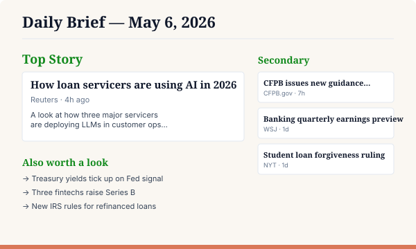

📰 Daily Brief
What you'll build
A magazine-style HTML page that pulls fresh items from RSS feeds and websites you care about, scores them against your stated interests, and presents a top story plus three to four secondary reads. Refresh by re-running the slash command — the page updates in place.

What you'll need
- Claude Code installed and signed in
- A folder you don't mind cluttering (e.g.,
~/projects/daily-brief) - Two short markdown files:
interests.mdandsources.md(the recipe will create them if missing)
Step 1 — Ask Claude to build your slash command
Open Claude Code in any folder. Paste this prompt, swap your specifics into the [FILL IN: ...] placeholders, and hit enter. Claude will write the slash command file at ~/.claude/commands/daily-brief.md for you.
Create a Claude Code slash command at ~/.claude/commands/daily-brief.md. The /daily-brief command should pull fresh items from RSS feeds I care about, score them against my interests, and write a magazine-style site/index.html — one top story, three to four secondary stories, and an "also worth a look" list. It should read interests.md and sources.md from the current directory, creating starters if they don't exist. For my starter files, use: Interests: - [FILL IN: e.g., "AI in financial services", "student loan policy", "loan servicer M&A"] Sources: - [FILL IN: e.g., Reuters business RSS, WSJ news RSS, CFPB blog feed] Layout preference: - [FILL IN: e.g., "magazine-style with serif headlines and a 'personal note' section at the top"] Write the file with proper YAML frontmatter (description: ...) and a clear prompt body so the command works on the first run.
What the generated file should look like
Claude should write something close to this at ~/.claude/commands/daily-brief.md:
---
description: Build a daily brief from RSS sources matched to your interests
---
You are building a daily brief HTML page for a director who wants to start
their day informed about specific topics.
INPUTS
- interests.md (in cwd) — bullet list of topics
- sources.md (in cwd) — list of RSS feeds and URLs
WHAT TO DO
1. If interests.md or sources.md is missing, create a sensible starter file
and tell the user to edit it.
2. Fetch each source. Extract recent items (last 48h preferred).
3. Score each item against the interests file. Rank.
4. Write site/index.html — magazine layout with one top story,
three to four secondary stories, and an "also worth a look" list.
5. Write site/styles.css if it does not exist.
OUTPUT
- site/index.html
- site/styles.css (one-time)
- A short summary in chat: how many items considered, top stories chosen.Reference copy lives at recipes/daily-brief.md.
Step 2 — Run it
From your project folder, in Claude Code:
> /daily-brief
✓ Read interests.md (8 topics)
✓ Read sources.md (12 feeds)
✓ Fetched 47 fresh items
✓ Scored and ranked
✓ Wrote site/index.html
✓ Top story: "How loan servicers are using AI in 2026"Step 3 — See it
Open the rendered page in your browser:
> open site/index.htmlCustomize
- Interests. Edit
interests.md— bullet list, free-form. Example: "AI in financial services", "loan servicing regulation". - Sources. Edit
sources.md— RSS URLs, news sitemaps, even plain article URLs. Mix as you like. - Layout. Tweak the prompt body to change section headings or add a "personal note" block at the top.
Why directors care
Walk into the day knowing what shifted in your domain — without doom-scrolling. The MD-file approach means your interests evolve with you: change a bullet, rerun, and your morning read changes shape immediately.